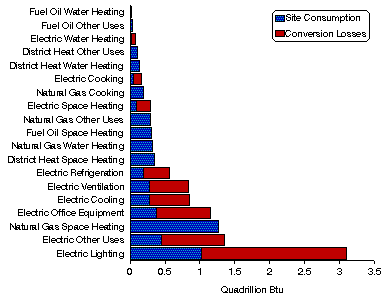

Home > Commercial Buildings Home > End-Use Intensities Executive Summary > Publication and Tables
|
|
|
Home > Commercial Buildings Home > End-Use Intensities Executive Summary > Publication and Tables |
Publication and TablesEnergy End Uses Ranked by Energy Consumption, 1989
Source: Energy Information
Administration, Office of Energy Markets and End Use, Forms EIA-871A through F of the 1989
Commercial Buildings Energy Consumption Survey.
Full Report - Energy End-Use Intensities in Commercial Buildings (1989 data) (file size .89 MB) pages: 140 Selected Sections Main Text (file size 61,294 bytes) pages: 12, includes the following: (requires Adobe Acrobat Reader)
Each section below requires Adobe Acrobat Reader
* Hardcopy information can be faxed to you by calling the National Energy Information Center (NEIC) at (202) 586-8800 or email at infoctr@eia.doe.gov.
URL: http://www.eia.gov/consumption/commercial/data/archive/cbecs/cbecs2j.html If you are having any technical problems with this site, please contact the EIA Webmaster at wmaster@eia.doe.gov |